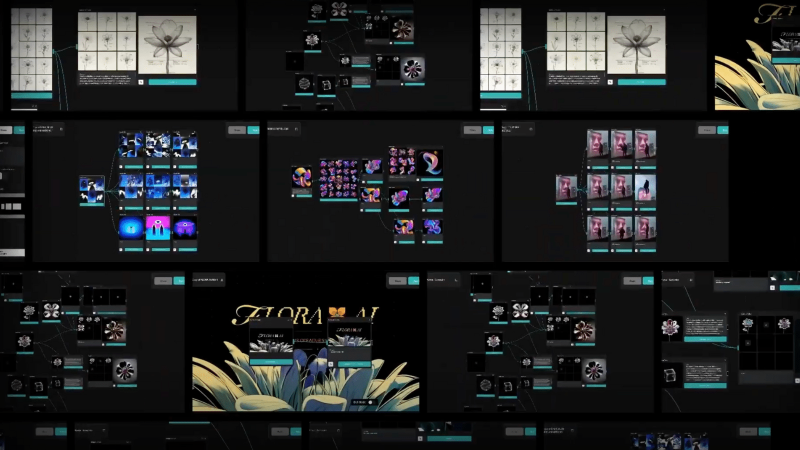
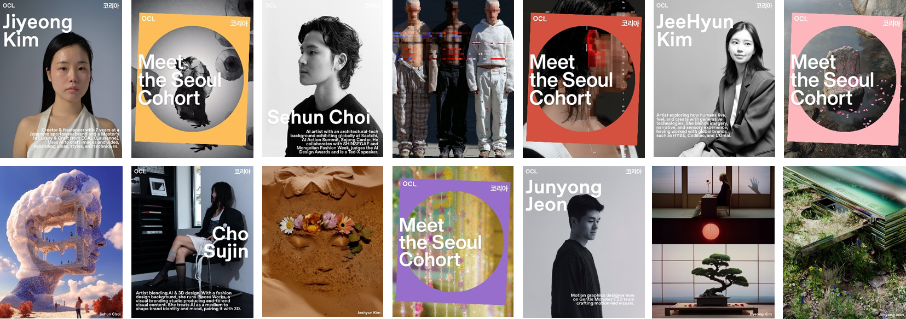
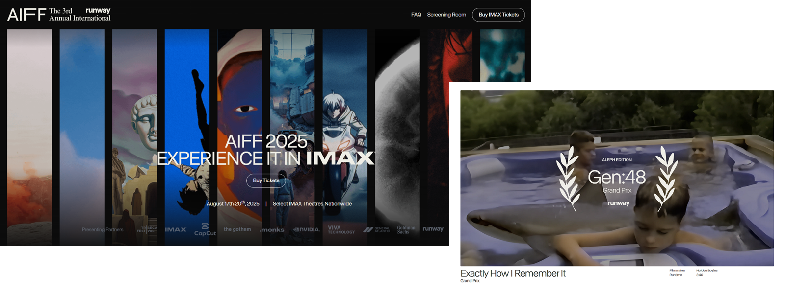

AI 시대의 예술, 인간 고유의 창의성이란 무엇인가
2025년 9월에 정리한 연구 노트. AI 시대의 예술과 창작을 재정의하는 일곱 개의 물음과 다섯 갈래의 제언.
이 노트는 2025년 11월 발표 “AIGC 시장 트렌드 및 창작자 패러다임의 변화”의 바탕이 된 사전 조사다. 발표 자료와 세 편의 글은 모두 여기에서 갈라져 나왔다.
01AI 시대 예술과 창작의 재정의
1-1. 무엇이 예술이고 예술가는 누구인가?
AI 기술은 인간의 직접적인 개입 없이도 미학적으로 뛰어난 결과물을 생성해내면서 ‘무엇이 예술이고 예술가는 누구인가’라는 해묵은 철학적 질문을 다시금 수면 위로 끌어올렸다. AI는 방대한 데이터를 학습하여 인간의 상상을 뛰어넘는 결과물을 만들며, 작품의 진정성과 창작 주체의 경계를 모호하게 만들고 있다. 이러한 변화는 창의성을 더 이상 인간만의 고유한 영역으로 볼 수 없다는 주장으로 이어져 창작의 미래에 대한 새로운 논의를 촉발한다.
이러한 변화의 서막을 연 사건은 2018년 프랑스 예술 그룹 'Obvious'가 AI를 이용해 제작한 초상화 <에드몽 드 벨라미(Edmond de Belamy)>가 크리스티 경매에서 예상가의 40배가 넘는 43만 2,500달러에 낙찰된 일이다. 이 사건은 AI가 만든 결과물이 상업적 가치를 지닐 수 있음을 증명하며 예술 시장에 큰 충격을 안겼다. 이어 2022년 미국 콜로라도 주립 박람회 미술대회 디지털 아트 부문에서 게임 기획자 제이슨 앨런이 이미지 생성형 AI '미드저니(Midjourney)'로 만든 작품 <스페이스 오페라 극장(Théâtre D'opéra Spatial)>이 1위를 차지하면서 논쟁은 더욱 격화되었다. 이 사건들은 AI 창작물이 더 이상 변방의 실험이 아니라, 기존 예술계의 권위와 기준에 직접적으로 도전하는 현실이 되었음을 보여주었다.
초기의 논쟁이 "기계가 만든 것도 예술이 될 수 있는가?"라는 미학적 질문에 집중했다면, 최근의 흐름은 훨씬 더 복잡한 양상을 띤다. 2025년 3월, 크리스티는 AI 기술로 제작된 작품만을 다루는 최초의 기획 경매 '증강 지능(Augmented Intelligence)'을 개최했다. 이 경매는 총 72만 8,784달러의 매출을 기록했으며, 특히 터키 출신 미디어 아티스트 레픽 아나돌(Refik Anadol)의 작품 <Machine Hallucinations - ISS Dreams-A>은 27만 7,200달러에 낙찰되며 최고가를 기록했다. 주목할 점은 이 경매 입찰자의 48%가 밀레니얼 및 Z세대였고, 37%는 크리스티에 처음 참여하는 신규 고객이었다는 사실이다. 이는 AI 예술을 중심으로 기술에 친숙한 새로운 세대의 컬렉터 층이 형성되고 있음을 시사한다.
x.com ↗/refikanadol/status/1893317052930122009https://onlineonly.christies.com/s/augmented-intelligence/refik-anadol-b-1985-6/249742
그러나 이러한 상업적 성공의 이면에는 첨예한 윤리적 갈등이 존재한다. 경매를 앞두고 6,000명 이상의 예술가들이 "AI 모델이 저작권이 있는 작품을 무단으로 학습하여 인간 예술가와 경쟁하는 상업적 제품을 만든다"고 주장하며 경매 취소를 요구하는 공개서한에 서명했다. 이들의 저항은 AI 예술의 미학적 가치가 아닌, 그 생산 과정의 윤리적 정당성을 문제 삼는다는 점에서 과거의 논쟁과 근본적인 차이를 보인다. 시장에서의 성공이 AI 예술을 둘러싼 논쟁을 종식시킨 것이 아니라, 오히려 그 논쟁의 핵심을 '미학'에서 '윤리'와 '법'의 문제로 옮겨 놓은 것이다. 즉, AI 예술을 둘러싼 핵심 갈등은 "기계가 예술을 할 수 있는가?"라는 철학적 담론에서 "이 예술은 정당하게 만들어졌으며 그 수익은 누구에게 돌아가야 하는가?"라는 사회경제적이고 윤리적인 현실 문제로 빠르게 진화했다.
1-2. 창작자는 대체되는가, 아니면 확장되는가?
AI는 창작자를 위한 강력한 증강 도구이자 동시에 창작자의 정체성을 위협하는 위협이라는 양면성을 지닌다. AI 기술이 창작자를 대체하는 것이 아니라, 인간의 역할을 비전을 제시하는 디렉터이자 공동 설계자로 확장시킨다는 긍정적 전망이 존재한다. 대표적인 사례로, 자신을 'AI 음악 디자이너'로 칭하는 가상 음악 창작자 'ImOliver'는 2025년 7월 미국 인디 레이블 헐리우드 미디어(Hallwood Media)와 정식 계약을 체결했다. 이는 'AI가 음악을 만드는 것'이 아니라 '인간이 AI를 통해 음악을 만든다'는 새로운 창작 철학을 제시하며, 인간의 기획력과 AI의 생성 능력이 결합하는 협업 모델의 가능성을 보여준다. SM엔터테인먼트의 버추얼 아티스트 '나이비스(nævis)' 역시 AI 보컬 기술을 통해 고유의 목소리를 구현함으로써, AI가 창작자의 비전을 기술적으로 실현하는 핵심 파트너가 될 수 있음을 입증했다.
theguardian.com ↗/culture/2025/aug/29/indie-bands-are-quitting-spotify-what-could-it-mean-for-the-future-of-music-streaming반면, AI 기술은 창작자의 정체성을 도용하며 예술의 본질을 위협하는 도구로 악용될 수 있다. 2025년, 영국 포크 뮤지션 에밀리 포트만(Emily Portman)의 이름과 스타일을 도용한 AI 생성 앨범 'Orca'가 스포티파이에 유통된 사건은 그 위험성을 명확히 보여준다. 포트만은 "AI가 창작에 쓰이는 것 자체가 문제가 아니라, AI가 사람인 척하는 것이 문제"라고 지적하며, AI의 위협이 단순한 경제적 대체를 넘어 '정체성의 희석'에 있음을 환기시켰다.
이러한 우려는 100% AI로 생성된 아티스트들이 실제 기획사와 계약하고 빌보드 차트에 오르는 현실이 되면서 더욱 증폭되고 있다. AI R&B 가수 자니아 모네(Xania Monet)가 300만 달러 규모의 계약을 체결하고, AI 배우 틸리 노우드(Tilly Norwood)가 에이전시 계약을 앞두자 할리우드 배우 조합(SAG-AFTRA)을 비롯한 인간 창작자들은 "수많은 전문 연기자의 작업 결과물을 훔쳐 만든 캐릭터"라며 강력하게 반발했다. 이는 AI가 창작의 도구를 넘어 인간 창작자를 직접 대체하고, 지치거나 불평하지 않는 '완벽한 상품'으로서 창작 생태계의 기반 자체를 위협할 수 있다는 구조적 위험을 드러낸다. 대중이 진정한 인간의 표현과 정교한 기계의 모방을 구분할 수 없게 될 때, 저작자성에 대한 신뢰 자체가 무너질 수 있기 때문이다.
1-3. 예술 창작의 새로운 패러다임
최근 AI 기술의 비약적인 발전은 창작 환경을 근본적으로 변화시키며 새로운 패러다임을 형성하고 있다.
- 인간의 창작물과 구분이 어려운 높은 품질의 결과물을 생성하며, 아이디어 자체의 독창성이 중요해지는 가치 평가의 전환을 이끌고 있다.
- 수개월이 걸리던 작업을 수초 만에 완성하는 압도적인 효율성은 '노력=가치'라는 전통적 인식을 약화시킨다.
- 텍스트, 이미지, 영상을 자유롭게 넘나드는 멀티모달 AI의 등장은 표현의 경계를 폭발적으로 확장시켰다.
- 복잡한 의도와 맥락을 이해하는 AI의 능력은 인간과의 창의적 협업 가능성을 열었다.
- 창작 파이프라인 전체를 통합하는 AI 도구들이 진화하면서 'AI 생성-인간 큐레이션'이라는 새로운 워크플로우가 현실화되었다.
이러한 패러다임의 전환은 단순히 속도나 품질의 문제가 아니라, 창작 노동 과정의 근본적인 역전을 의미한다. 전통적으로 아이디어 구상은 비교적 짧았지만 그것을 구현하는 실행 단계가 전체 시간과 노력의 대부분을 차지했다. 그러나 AI는 이 실행 단계를 자동화하거나 극적으로 단축시킨다. 그 결과, 창작자의 주된 과업은 AI가 제시하는 무한한 가능성을 탐색/탐사하는 것으로 변화했다. 이제 가장 가치 있는 인간의 능력은 기술적 숙련도가 아니라, 무엇을 요구할지 아는 '개념적 명확성'과 무엇을 선택할지 아는 '비판적 판단력'이 되었다. 이는 예술 교육의 방향과 예술 노동의 가치 평가 기준에 대한 근본적인 재검토를 요구한다.
02새로운 미디어의 탄생과 예술적 가치의 전환
2-1. AI는 '완전히 새로운 미디어'다
AI를 단순히 기존의 창작 과정을 더 빠르고 저렴하게 만드는 효율성 도구로만 간주하는 것은 이 기술의 본질을 간과하는 것이다. AI 미디어의 선구자들은 AI가 기존 예술의 저렴한 대체물이 아닌, 사진이나 영화처럼 완전히 새로운 문법과 가능성을 지닌 신생 미디어(New Medium)임을 강조한다. Runway의 CEO 크리스토발 발렌수엘라(Cristóbal Valenzuela)는 "이것은 새로운 매체다. 다른 것의 진화가 아니라, 사진과 영화가 새로웠던 것처럼 완전히 새로운 것"이라고 단언한다.
x.com ↗/c_valenzuelab/status/1956855387849916911원문 내용 펼치기
인공지능 미디어 제작에 깊이 관여한 사람들을 만날수록 우리는 모두 같은 결론에 도달한다는 걸 깨닫게 된다: 이것은 새로운 매체다. 기존 매체의 진화가 아니다. 사진과 영화가 그랬던 것처럼 완전히 새로운 것이다.
어떤 매체를 이해하려면 표면 너머 그 핵심을 들여다봐야 한다. 어떤 기술은 기존 매체를 보완할 뿐이다. 접이식 물감 튜브는 회화를 변화시켰지만 새로운 매체를 발명하지는 않았다. 다른 기술들은 완전히 새로운 표현 방식을 창조한다. 광학 렌즈, 감광성 화학물질, 기계식 셔터는 회화를 개선하지 않았다. 더 나은 붓이나 풍부한 안료가 아니었다. 그것들은 사진을 탄생시켰다. 인간의 해석을 통해 빛을 표현하는 것이 아니라 빛 자체를 포착하는 매체다.
모든 새로운 매체는 고유의 가능성, 기본 요소, 잠재력을 지닌다. 고유의 관객을, 고유의 창작 세대를 낳는다. 움직이는 영상이 처음 등장했을 때 사람들은 이를 기록된 연극으로 여겼다. 무대에 카메라를 겨누고 연극을 촬영했다. 이 매체가 실제로 무엇을 가능하게 하는지 발견하기까지 수년의 실험이 필요했다. 아이젠슈타인은 몽타주를 발견했다. 무관한 장면들을 병치함으로써 새로운 의미를 창출할 수 있음을. 포터는 연속성을 발견했다. 관객이 컷을 넘나드는 행동을 따라갈 수 있음을. 누군가 마침내 카메라를 움직였고 모든 것이 바뀌었다.
표면적 유사성은 우리를 속인다. 그림과 사진 모두 평면에 색채와 구도를 배치한다. 그러나 그림을 마스터한다는 것은 안료, 붓, 혼합, 색채 이론을 이해하는 것이다. 사진을 마스터한다는 것은 렌즈, 셔터 속도, 조리개, 빛 자체를 이해하는 것이다. 물론 구도 지식은 이전된다. 대부분의 지식은 그렇지 않다.
사진술이 등장했을 때 우리는 치명적인 실수를 저질렀다: 화가들에게 평가를 맡긴 것이다. 표면적으로 비슷해 보였기 때문이다. 그들은 자신들의 매체라는 렌즈를 통해 이 새로운 형식을 해부했고, 자신들이 아는 것에 집착했다. 예상대로 그들은 사진술이 유화의 질감을 절대 따라잡지 못할 것이며, 혼합된 안료가 표현하는 방식대로 색을 포착하지 못할 것이라고 결론지었다. 그들은 옳았지만 동시에 핵심을 완전히 놓쳤다. 사진은 회화가 되려 한 게 아니었다. 그들은 유추로 사고하며, 새로운 것을 낡은 기준에 따라 평가한 것이다.
AI 미디어에서도 똑같은 실수가 반복되고 있다. 일부 영화 제작자와 사진작가들은 AI가 자신들의 매체가 이룬 것을 결코 달성하지 못할 것이라고 선언한다. 그들의 말은 맞다. 그게 이 매체의 본질이 아니기 때문이다.
AI를 순전히 영화의 렌즈로만 평가하는 것은 화가들이 사진을 순전히 회화의 렌즈로만 평가하는 것과 같다. 표면은 비슷해 보일지 모르지만. 움직이는 이미지, 구성된 프레임. 핵심은 근본적으로 다릅니다.
AI는 고유의 가능성을 지닙니다. 창작은 비동기적입니다. 대규모로 이루어집니다. 양적 이점을 누립니다. 잠재 공간을 탐색하며, 포착하기보다 샘플링합니다. 생성을 주도하는 참조 자료를 제공합니다. 실시간으로 작업하며 가능성들이 드러나는 것을 지켜봅니다. 회화, 영화, 게임에서 얻은 지식 일부는 여기에 적용됩니다. 대부분은 그렇지 않습니다.
매체는 항상 서로 영향을 미친다. 사진이 회화를 죽이지 않았다. 오히려 회화를 기록의 굴레에서 해방시켜 추상화, 인상주의, 초현실주의를 탐구할 수 있게 했다. 새로운 매체는 다른 매체들이 될 수 있는 가능성을 바꾼다.
AI는 인식과 표현의 새로운 매체의 탄생이다. 우리는 아직 초기 단계에 있으며, AI의 몽타주, 움직이는 카메라, 매체의 본질을 드러내는 모든 혁신적 순간들에 해당하는 것들을 발견해가는 중이다. 영화 기준으로 AI를 평가하는 영화인들은 실제 일어나는 현상을 놓칠 것이다. 화가들은 사진을 놓쳤고, 연극 평론가들은 영화를 놓쳤다.
이 매체가 무엇을 할 수 있는지 밝혀내는 유일한 방법은 과거의 기준으로 평가하는 것을 멈추는 것이다. 표면만 바라보는 것을 그만두고 핵심을 실험하기 시작하라. 우리는 영화가 진화하는 것을 지켜보는 것이 아니다. 무언가가 탄생하는 것을 목격하고 있는 것이다. 이것이 바로 새로운 매체다.
원문 내용 펼치기
3년 전만 해도 인공지능과 스토리텔링의 기회는 영화를 더 효율적이고 저렴하게 만드는 데 있을 것 같았다. 하지만 그것이 진정한 미래는 아니었다. 사진술이 더 싼 그림을 만드는 것이 아니었듯, 영화도 더 싼 연극을 만드는 것이 아니었다. 사실 2년 전만 해도 이것이 새로운 매체라는 건 명백했다. 스스로 지능을 지닌 자각적 매체, 본질적으로 상호작용적인 매체, 개인화되고 리믹스 가능한 플레이 가능한 매체였다. 그리고 아직 발견할 것이 더 많다. 이것이 새로운 매체임을 깨닫고 우리는 그래픽이 아닌 시뮬레이션에 집중했다. 캐릭터에 생명을 불어넣고, 그들에게 집을 주고, AI가 스스로 이야기를 들려주도록 하는 데 집중했다.
그래픽 경쟁을 통해 더 저렴한 VFX 샷과 더 저렴한 영화를 만드는 것은 돌이켜보면 주의를 분산시킨 일이었다. 실제로 VFX 산업 규모보다 더 많은 자금이 VFX 산업을 뒤흔들기 위해 투입되었다. 시장에 등장한 수많은 AIVFX 스타트업들을 시장이 감당할 수 있는 수준은 결코 아니다. AI 영상 스타트업을 운영하며 VFX 및 광고 전문가들을 위해 점점 더 나은 그래픽을 위해 더 많은 비용을 지출하고 있다면, 한 걸음 물러서 이 매체를 바라봐야한다. 이는 영화 제작 파이프라인의 일부가 아니다. 이것을 단순히 기존 매체의 형태로 억지로 끼워 맞출 수는 없다.
100년 만에 등장한 가장 강력한 기술을 이용해 더 싼 픽사 영화, 더 싼 폭발 장면, 더 싼 광고를 만드는 데 집중하지 말자. 그것은 정말로… 지루하다! 목표는 '저렴함'에서 벗어나 이 새로운 매체에서 태생적인 예술 작품과 걸작을 만드는 쪽으로 전환되어야 한다. 경쟁에 참여해야한다! 이 매체에 태생적인 작품을 만들어야만 진정한 탐구가 가능하다. 런웨이(Runway)는 이를 이해하고, 미드저니(Midjourney)도 이해하며, 몇몇 다른 기업들도 마찬가지이다. 세기에 단 몇 개의 새로운 매체만이 등장해왔다. 우리 모두가 그 중심에 서 있다.
새로운 매체는 다른 매체들이 될 수 있는 가능성을 바꾼다. 사진은 회화를 기록의 굴레에서 해방시켜 추상, 인상주의 등을 탐구하게 했다. 마찬가지로 AI 미디어를 기존 예술의 틀에 억지로 끼워 맞추려는 시도는 이 새로운 매체의 고유한 잠재력을 놓치는 우를 범하게 될 것이다. 이 새로운 매체의 본질은 현실 세계를 포착(capturing)하는 것이 아니라, 방대한 데이터가 잠재된 다차원적 공간, 즉 잠재 공간(latent space)을 샘플링(sampling)하여 예측 불가능한 새로운 결과를 발현(emerging)시키는 데 있다. 이는 아이디어를 구상하고 순차적으로 구현해나가는 전통적인 선형적 창작 과정과는 완전히 다르다. 창작자는 AI가 실시간으로 쏟아내는 수많은 변주를 관찰하고 피드백을 주는 순환적 워크플로우를 통해 작품을 발전시킨다.
따라서 AI의 진정한 잠재력은 기존 예술 형식을 완벽하게 모방할 때가 아니라, 오직 AI를 통해서만 가능한 고유한 예술을 발견할 때 실현될 것이다. 초기 사진이 회화의 구도를 모방했지만, 앙리 카르티에 브레송과 같은 작가들이 카메라만이 포착할 수 있는 '결정적 순간'을 탐구하며 사진 고유의 예술성을 확립했듯, 미래의 AI 예술가들은 잠재 공간 자체의 특성, 즉 그 안의 결함, 낯선 논리, 불가능한 기하학 등을 탐구하며 새로운 미학을 창조해 나갈 것이다.
2-2. 범람하는 창작물과 아우라의 재배치
x.com ↗/freepik/status/1940433254089461795스톡 이미지 플랫폼 Freepik과 같이 저작권이 확보된 자체 데이터로 학습시킨 AI 모델을 통해 누구나 손쉽게 창작물을 만들 수 있는 환경이 보편화되고 있다. 이렇게 창작물이 범람하면서, 독일 철학자 발터 벤야민(Walter Benjamin)이 제시한 예술 작품의 고유한 '아우라(aura)', 즉 원본의 유일무이한 현존성은 극단적인 도전에 직면했다.
하지만 예술의 아우라는 파괴되는 것이 아니라 그 원천을 옮겨가며 끊임없이 재구성되어 왔다. 시대의 기술적, 사회적 변화에 따라 아우라의 형태는 계속 변화해왔으며, AI 시대의 아우라는 또 한 번의 중대한 전환을 맞이한다. 이제 아우라는 최종 결과물에 고정되어 있지 않고, 창작 행위의 비물질적 측면, 즉 '과정'과 '맥락'으로 재배치되고 있다.
| 시대 | 기술적 특징 | 아우라의 원천 | 창작자의 역할 |
|---|---|---|---|
| 전통 예술 | 수공예, 유일무이한 원본 | 물리적 원본의 유일성, 장인의 손길 | 창조자 (Creator) |
| 사진/영화 | 기계적 복제 가능 | 원본의 제의적 가치 감소 | 기록자 (Recorder) |
| 팝아트/개념미술 | 대량생산 이미지의 차용 | 예술가의 개념적 선택과 아이디어 | 전유자 (Appropriator) |
| 디지털/제너레이티브 아트 | 알고리즘 기반 생성, 무한 복제 | 독창적인 알고리즘 설계 | 건축가 (Architect) |
| 생성형 AI 아트 | 거대 모델과의 상호작용, 예측 불가능성 | 과정과 맥락, 상호작용의 순간 | 기획자/큐레이터 (Director/Curator) |
2-3. 과정과 맥락으로 재배치되는 창작의 가치
AI 시대 예술의 아우라는 물리적 결과물을 떠나 두 가지 새로운 비물질적 원천으로 이동한다. 그것은 바로 과정과 맥락이다.
- 과정의 아우라(Aura of Process)
예술적 가치가 최종 결과물에서 그것에 도달하기까지의 창작 여정 전체로 이동한다. 독창적인 아이디어를 구상하고, 수많은 프롬프트를 실험하며 시행착오를 겪고, 무수한 AI 생성물 중에서 특정 결과물을 선택하기까지의 모든 과정과 판단의 연쇄가 작품의 일부가 된다. 이는 마치 영화의 메이킹 필름이 본편만큼이나 중요한 의미를 갖는 것과 같다. 아티스트가 자신의 창작 과정을 공유하는 것 자체가 하나의 작품으로 인정받을 수 있다.
- 맥락의 아우라(Aura of Context)
작품의 가치는 '왜' 만들어졌으며, 사회적으로 어떤 의미를 지니는지에 대한 창작자의 이야기에서 비롯된다. AI가 생성한 이미지일지라도, 창작자가 부여한 의도와 이야기, 그리고 관객이 그 작품과 상호작용하며 해석하고 경험하는 과정이 결합될 때 비로소 온전한 예술적 가치가 발생한다. 비평가들이 AI 예술이 종종 "영혼이 없다"고 느끼는 이유는 바로 이 의도적이고 맥락이 풍부한 인간적 요소의 부재 때문이다.
이러한 변화는 중요한 역설을 만들어낸다. AI 기술이 결과물의 기술적 완벽함과 복제의 용이성을 극대화할수록, 오히려 불완전하고 비효율적이며 복제 불가능한 인간의 '과정'이 희소한 가치를 띠게 되는 것이다. 경제학은 희소성에 의해 움직인다. 과거에는 잘 만들어진 결과물이 시간과 기술의 제약으로 인해 희소했다. 이제 AI는 고품질의 결과물을 풍부하게 만들었고, 그 생산의 한계비용을 거의 '0'에 가깝게 만들었다. 그렇다면 새로운 희소성은 어디에 있는가? 바로 창작 이면에 담긴 인간의 고유한 경험, 고뇌, 선택, 그리고 이야기다. 따라서 미래의 예술 시장은 저렴하고 풍부한 AI 생성 콘텐츠 시장과, 인간의 과정과 서사가 투명하고 설득력 있게 증명되는 프리미엄 예술 시장으로 양분될 가능성이 높다.
03AI 시대, 창작자의 변화
3-1. 창작의 민주화, 흔들리는 예술가의 권위
“이전까지 창작 경험이 없던 한 창작자가 AI 도구를 활용하여 단 몇 분 만에 전문가 수준의 창작물을 얻게 된다. 그는 자신의 SNS 채널에 창작물을 업로드하기 시작했고, 순식간에 수많은 팔로워를 얻으며 스스로를 전문 창작자로 여기기 시작했다. 하지만 그가 자신의 창작물을 ‘작품’으로서 미술계에 선보였을 때 돌아온 것은 차가운 외면과 비판 뿐이었다. AI와 같은 기술이 만들어낸 것은 예술이 아니라며 견고한 장벽을 세우는 예술계에 대해 그는 강한 반감을 품게 되었고, 자신의 채널을 통해 이를 강하게 비판하기 시작한다. 대중들은 그의 비판적 주장에 열광하며 동조하기 시작했다. 그의 채널은 점점 더 강력한 영향력을 갖기 시작했고, 사람들은 그를 권위에 도전하는 새로운 시대의 아티스트라며 칭송했다.”
앞서의 가상 시나리오는 AI 시대의 창작의 민주화와 기존의 예술가 및 예술가가 가진 권위가 빠르게 와해될 수 있는 가능성을 시사한다. 이처럼 AI는 전문적인 기술 훈련이나 고가의 장비 없이도 누구나 고품질의 창작물을 만들 수 있는 '창작의 민주화'를 이끌고 있다. 그러나 이러한 민주화가 평등한 창작 환경을 보장하는 것은 아니다. 오히려 이는 예술가를 정의하던 기존의 사회적 권위를 흔들고, 권력의 중심을 이동시키는 결과를 낳는다. 과거 예술적 권위는 갤러리, 비평가 등 전통적인 제도권 내에서 형성되었다. 하지만 이제는 '좋아요'와 '팔로워' 규모로 대표되는 대중의 평가가 기성 미술계의 권위를 넘어서는 현상이 발생하고 있다. 더욱이 AI 시대에는 이러한 현상이 보다 가속화될 것으로 전망된다.
이는 창작 도구의 민주화가 '권위의 탈중앙화'로 이어지고 있음을 보여준다. 예술적 가치를 판별하고 공인하는 권력이 주체로부터 소셜 미디어 알고리즘, 온라인 커뮤니티, 인플루언서와 같은 새로운 주체로 이동하고 있는 것이다. 이는 기존의 위계를 없애는 것이 아니라, 더 변동성이 크고 알고리즘에 의해 좌우되는 새로운 위계로 대체하는 것에 가깝다. 이러한 변화는 예술 지원 정책에도 기존의 권위와 새로운 대중성 사이에서 어떤 기준을 세워야 할지에 대한 어려운 과제를 던진다.
3-2. AI 시대의 창작, '노력의 가치'에 대한 딜레마
AI는 예술 작품의 가치를 평가하는 전통적인 기준 중 하나인 '노력의 가치'에 근본적인 의문을 제기한다. 2025년 8월 공개된 맥도날드의 한 광고 영상은 이 딜레마를 극명하게 보여준다. 환상적인 비주얼의 이 광고를 본 대중은 당연히 AI로 제작했을 것이라 추측했다. 그러나 연출가는 이 영상이 수개월에 걸쳐 수백 명의 아티스트가 참여한 실사 촬영물임을 해명해야만 했다. 이 일화는 '뛰어난 결과물 = 힘든 제작 과정'이라는 창작 영역의 전통적인 인과관계가 더 이상 당연하지 않게 되었음을 보여준다.
x.com ↗/HuinGuillaume/status/1955301767740096659이러한 인식의 변화는 창작자들에게 새로운 형태의 부담, 즉 '진정성 노동(authenticity labor)'을 안겨준다. 이제 예술가들은 작품 그 자체만으로는 온전히 인정받기 어려워졌으며, 자신의 창작 과정에 얼마나 독창적인 아이디어와 비판적 판단, 그리고 인간적인 노력이 투입되었는지를 적극적으로 증명하고 서사화해야 하는 과제에 직면했다. 가치에 대한 인식은 종종 인지된 비용(시간, 노력, 기술)과 연결된다. 관객이 10초 만에 만든 것과 10개월이 걸린 것을 구분할 수 없다면, 후자에 기꺼이 프리미엄을 지불하려 하지 않을 수 있다. 이는 진정으로 노동 집약적인 인간의 예술 행위가 역설적으로 평가절하될 수 있는 위험을 내포한다.
더 나아가, 만약 미래에 AI가 그럴듯한 '창작 비하인드 스토리'나 작업 과정 영상까지 자동으로 생성할 수 있게 된다면, 우리는 진정한 노력과 교묘하게 시뮬레이션된 허구를 구분할 수 없게 될지도 모른다. '진정성'이라는 가치마저 AI에 의해 모방될 수 있다는 가능성은, 우리가 예술의 가치를 어디에 두어야 할지에 대한 근본적인 재검토를 피할 수 없게 만든다.
3-3. AI 시대의 새로운 창작 도구 - 프롬프트
AI 시대에 창작자의 ‘노력의 가치’는 '프롬프트(prompt)'라는 새로운 형태의 붓과 조각칼로 대체된다. 프롬프트는 단순히 기능적 지시문을 넘어 창작자의 의도, 미학적 감성, 그리고 세계관까지 압축적으로 담아내는 설계도와 같다. 창작자의 의도와 감성을 언어에 압축하여 설계하는 능력, 즉 언어를 정교하게 다루는 묘사 능력이 새로운 핵심 창작 기술로 부상하고 있다.
프롬프트의 등장은 창작의 워크플로우 자체를 근본적으로 변화시켰다. AI 시대의 창작은 예측 가능한 선형적 단계를 벗어나 AI의 잠재 공간을 탐험하는 비선형적 과정으로 진화한다. 그 과정은 크게 3단계의 순환 구조로 이루어진다.
- 1단계에서 인간은 '디렉터(Director)'로서 최초 아이디어를 프롬프트로 구체화한다.
- 2단계에서 AI는 '생성 엔진'으로서 무한한 시안을 생성하고, 인간은 '큐레이터(Curator)'로서 이를 평가하고 선택하며 피드백과 프롬프트 수정을 반복한다.
- 3단계에서 인간은 '에디터(Editor)'로서 선택된 여러 결과물을 조합하고 수정하여 작품의 완성도를 높인다. 이 과정에서 창작과 감상의 경계는 허물어지며, 예술가는 자신의 비전에 부합하는 결과물을 끊임없이 평가하는 '최초의 감상자'가 된다.
결국 모두가 동일한 AI 도구를 사용할 수 있는 환경에서 작품의 차별성을 만드는 것은 기술적 숙련도가 아니라, 수많은 가능성 중에서 무엇을 선택하고 왜 그것이 의미 있는지를 판단하는 인간의 '안목'이다.
3-4. AI에게 창의성이라는 개념이 존재할 수 있는가?
manovich.net ↗/index.php/projects/artificial-aesthetics생성형 AI와 프롬프트의 조합은 특정 화가의 화풍을 모방하는 등, 놀라운 기계적 '창작(creation)' 능력을 보여준다. 하지만 이러한 통계적 생성 능력이 인간과 동일한 '창의성(creativity)'을 의미하는지에 대해서는 신중한 접근이 필요하다.
영국의 수학자 마커스 드 사토이(Marcus du Sautoy)는 AI의 능력을 기존 데이터의 패턴을 조합하고 변형하여 새로운 결과물을 만들어내는 '조합적 창의성(combinatorial creativity)'으로 규정했다. 이는 레프 매노비치(Lev Manovich) 등이 '혼성 저작성(remixed authoriality)'으로 묘사한 것과도 맥을 같이하는데, 무에서 유를 창조하는 것이 아니라 기존의 수많은 요소를 선택, 조합, 재배열하는 '리믹스(remix)'에 가깝다는 것이다. 이러한 관점에서 볼 때, 하나의 AI 예술 작품 뒤에는 AI 모델 개발자, 데이터셋 제공자, 사용자 등 여러 행위자들이 연결된 네트워크가 존재하며, 저작자성은 한 명의 천재적 개인에게 귀속되는 것이 아니라 분산되고 공유되는 집단적 속성을 갖게 된다.
법적 차원에서도 이 문제는 중요한 쟁점이다. 현행 대한민국 저작권법은 "인간의 사상 또는 감정을 표현한 창작물"만을 보호 대상으로 명시하고 있으며, 미국 저작권청 역시 인간 저작자 요건을 고수하며 AI가 생성한 작품의 저작권 등록을 거부하고 있다.
그러나 AI의 창의성이 단순히 조합에만 머무르지 않을 가능성도 제기된다. 한 AI가 2만 GPU 시간 동안의 자율 실험을 통해 인간의 지식 총합을 넘어서는 새로운 신경망 아키텍처 106개를 스스로 발견한 사례는, AI가 기존 데이터를 조합하는 것을 넘어 문제 해결을 위한 새로운 방법 자체를 창조하는 '자율적 창의성'의 영역으로 나아갈 수 있음을 시사한다.
arxiv.org ↗/abs/2507.18074이는 예술가가 새로운 화풍을 창안하는 것과 비견될 수 있는 실존적 창의성의 영역으로, 미래에는 AI의 예술가 지위에 대한 사회적 합의가 새로운 주제로 떠오를 수 있음을 예고한다.
3-5. AI 시대에도 변하지 않는 인간 예술가의 역할
AI 기술이 발전함에 따라 인간 예술가의 역할은 사라지는 것이 아니라, 더욱 고도화되고 다층적으로 진화한다.
- 첫째, 예술가는 기획자이자 큐레이터로 진화한다. AI가 쏟아내는 무한한 결과물 중에서 '무엇을, 왜 선택하는가'가 중요해졌으며, 예술가의 정체성은 이제 '어떻게 만들었는가'가 아닌 '왜 이 선택을 했는가'로 증명된다. 마르셀 뒤샹이 기성품인 변기를 선택하여 <샘>이라는 작품으로 만든 것처럼, AI 시대의 예술가 역시 '선택'과 '맥락 부여'를 통해 새로운 가치를 창조한다.
- 둘째, 예술가는 프로그래머이자 시스템 설계자로 확장된다. 레픽 아나돌(Refik Anadol)과 같은 선도적인 예술가들은 범용 AI 도구를 사용하는 데 그치지 않고, 자신만의 예술적 비전을 구현하기 위해 맞춤형 AI 모델을 직접 구축하거나 훈련시킨다. 이들은 최종 결과물뿐만 아니라 창작 과정 전체를 설계하는 '메타-창작자(meta-creator)'로 진화하고 있다.
- 셋째, 예술가는 기술 비평가이자 윤리적 감시자로서의 중요한 사회적 역할을 맡게 된다. 예술가들은 AI 윤리, 저작권, 데이터 편향성 등의 문제에 대해 창작자의 입장에서 비판적 목소리를 내고, 기술적 산출물(artifact)에 '왜?'라는 질문을 던져 의미 있는 예술작품(artwork)으로 변환시키는 최종적인 책임을 진다.
- 마지막으로, 아날로그의 역설이 나타난다. AI가 만들어내는 완벽하고 매끄러운 디지털 이미지가 범람하는 시대에, 역설적으로 인간의 손길이 느껴지는 아날로그적 창작 방식의 가치가 재조명받고 있다. 디지털 시대로 넘어오는 과정에서 인디 게임 <컵헤드(Cuphead)>는 1930년대 셀 애니메이션(Cel Animation) 스타일을 재현하기 위해 모든 프레임을 손으로 그리는 극도의 노동집약적 방식을 택했고, 이 '손맛' 자체가 게임의 핵심적인 성공 요인이 되었다. 이와 유사하게 AI를 통해 생성한 각각의 이미지를 통해 셀 애니메이션 스타일을 재현한 사례가 등장하고 있다. 이러한 사례는 AI 기술을 활용함에 있어 어떻게 다른 창작자들과 자신을 차별화할 수 있을지에 대한 고민의 결과라고 평가할 수 있다.
04인간과 AI의 공진화: 도구에서 공동 창작자로
4-1. '도구'를 넘어 '동료'가 된 AI
AI와의 관계를 설정하는 방식은 창작의 결과물과 과정에 지대한 영향을 미친다. AI를 단순히 명령을 수행하는 수동적인 도구로만 여길 경우, 그 잠재력의 일부만을 활용하게 된다. 그러나 AI를 아이디어를 주고받는 '대화 상대'이자 지치지 않는 '창의적 동료'로 인식할 때, 인간과 기계의 협업은 새로운 차원의 시너지를 창출할 수 있다. AI는 아이디어 구상 단계에서 수많은 변주를 실시간으로 제안하여 창작자의 상상력을 자극하고, 반복적인 작업을 대신 처리하여 창작자가 본질적인 고민에 집중하도록 돕는다.
이러한 협업 관계가 심화되면서, 일부 창작자들은 범용적인 목적의 AI 도구를 자신만의 ‘AI 에이전트(AI Agent)’ 또는 'AI 컴패니언(Al Companion)'으로 발전시키고 있다. 이는 단순히 일회성 명령에 반응하는 것을 넘어, 창작자의 과거 작업 스타일, 선호하는 미학, 이를 구현하기 위한 도구, 그리고 이전의 대화 내용까지 기억하고 학습하여 함께 진화하는 가상의 협업 파트너를 의미한다. 예를 들어, 창작자가 "지난번 '숲 속의 밤' 시리즈에서 보여줬던 몽환적인 분위기를 살려서 새로운 장면을 구상해줘"라고 요청하면, AI는 과거의 맥락을 이해하고 그에 맞는 결과물을 제시하며 아이디어를 함께 발전시켜 나간다.
4-2. '동료'를 넘어 '공동창작자'로서의 AI
kocca.kr ↗/n_content/kocca_vol36/07.html인간과 AI의 관계는 단순한 협력을 넘어, 서로의 한계를 보완하며 함께 발전해 나가는 '공진화(Co-evolution)'의 개념으로 나아가고 있다. 이러한 공생 관계는 궁극적으로 인간 고유의 창의성을 더욱 부각하는 촉매제가 될 수 있다. AI가 생성한 초안에 만족하지 않고, 끊임없이 비판적 질문을 던지며 더 깊은 의미와 독창성을 추구하는 과정에서 창작자로서의 정체성이 심화되기 때문이다. 결과적으로 AI 시대의 창작자는 인간의 상상력을 지키고, AI와 협력하여 창의성을 발전시키는 중요한 임무를 갖게 된다.
AI는 방대한 데이터를 기반으로 무한한 패턴을 생성하지만, 그 결과물이 왜 새로워야 하는지에 대한 본질적인 질문을 던지지는 못한다. 반면 인간은 AI의 결과물 앞에서 '진부하다'고 느끼고 만족하지 않으며, 새로움을 향한 끝없는 갈망을 드러낸다. 미래의 창작자는 이처럼 AI가 제시하는 최적의 결과에 안주하는 대신, 창작 과정 전체를 주도하는 '설계자'로서 AI를 단순한 동료를 넘어 창의적인 공동창작자로 삼아야 한다. AI가 만든 패턴에 고유한 맥락과 삶의 의미를 부여함으로써, 인간의 창의성은 AI 시대에 더욱 빛을 발하게 될 것이다.
4-3. '공동 창작자 AI'와의 통합 워크플로우 구축

AI 시대의 1인 창작자는 여러 전문화된 AI 도구들을 오케스트라처럼 지휘하여 과거에는 팀 단위로만 가능했던 복합적인 프로젝트를 빠르고 효율적으로 완성할 수 있다. 음악 산업에서 1인 창작자가 앨범 아트, 음악, 뮤직비디오를 통합 제작하는 워크플로우를 예로 들 수 있다.
- 1단계 스타일 추출: 모티브가 되는 사진을 이미지 AI에 업로드하면, AI는 핵심 스타일 코드를 분석하여 이를 기반으로 새로운 앨범 재킷 시안들을 생성한다.
- 2단계 감성 프롬프팅: 마음에 드는 이미지 시안을 선택한 후, 음악 AI에게 '고요한 슬픔 속 한 줄기 희망'과 같은 감성적 프롬프트를 입력한다. AI는 시각적 스타일과 감성적 맥락을 통합하여 그에 맞는 음악을 생성한다.
- 3단계 콘셉트 통합: 완성된 이미지와 음악을 영상 AI 편집기에 입력하면, AI는 음악의 흐름과 분위기에 맞춰 영상을 자동으로 편집하고 완성하며, 때로는 더 나은 방향을 제안하기도 한다.
이러한 워크플로우는 인간이 전체적인 목표와 감성적 방향을 제시하고, AI는 각 단계의 기술적 실행을 담당하며 강점을 교환하는 공진화의 구체적인 모습을 보여준다.
05AI가 재편하는 창작 생태계: 플랫폼, 커뮤니티, 그리고 권리
5-1. AI 시대, 창작 생태계의 새로운 양극화
창작의 민주화 이면에는 창작 생태계의 구조적 재편과 새로운 형태의 양극화라는 도전이 자리하고 있다. AI 시대는 역설적으로 극소수의 '슈퍼 창작자(super creator)'와 다수의 아마추어 창작자, 그리고 AI 기술에 적응하지 못해 도태되는 전통적 창작자들로 생태계를 양극화시킬 위험을 내포하고 있다. '슈퍼 창작자'는 단순히 하나의 AI 도구를 사용하는 것을 넘어, 다양한 AI 도구들을 능숙하게 오케스트레이션하고, 강력한 예술적 콘셉트와 비전을 불어넣을 수 있는 개인을 의미한다. 이들의 핵심 역량은 개별 작업의 실행 능력(execution)이 아니라, 전체 프로젝트를 기획하고 통합하는 총체적 연출 능력(orchestration)에 있다.
이러한 변화는 창작 생태계의 경제적 가치가 '실행'에서 '기획'으로 이동하고 있음을 시사한다. AI가 개별 창작 작업의 비용을 '0'에 가깝게 수렴시키면서, 단순 실행 기술의 가치는 하락하는 반면, 독창적인 아이디어와 전체를 조망하는 기획력의 가치는 더욱 높아진다. 이는 미래의 창작자에게 단일 분야의 깊이 있는 전문성뿐만 아니라, 다양한 기술을 이해하고 융합하여 자신만의 창작 시스템을 구축할 수 있는 'T자형 인재'로서의 역량이 필요함을 의미한다. 따라서 예술 교육과 지원 정책은 이러한 새로운 창작 환경에 필요한 기획력, 비판적 사고, 그리고 시스템 설계 능력을 어떻게 공평하게 분배하고 육성할 것인지에 대한 깊은 고민을 필요로 한다.
5-2. AI 시대의 새로운 창작 커뮤니티와 플랫폼
AI 시대의 예술 창작은 더 이상 예술가의 고독한 스튜디오 안에서만 이루어지지 않는다. 창작과 교류, 학습의 중심지가 디스코드(Discord)와 같은 온라인 커뮤니티, 깃허브(GitHub)와 같은 디지털 플랫폼으로 빠르게 이동하고 있다. 이 온라인 광장들은 전 세계의 창작자들이 실시간으로 아이디어를 교환하고, 서로의 기법을 모방하고 변형하며, 집단적으로 새로운 스타일을 창조해나가는 역동적인 '창작 허브(creative hub)'로 기능한다.
이미지 생성 AI '미드저니(Midjourney)'의 초기 사용 환경을 제공했던 디스코드는 이러한 새로운 창작 생태계의 대표적인 예이다. 이곳에서 사용자들은 자신이 생성한 이미지를 즉시 공유하고, 다른 사용자들은 그 결과물과 함께 생성에 사용된 프롬프트를 확인하고 복제하거나 변형하여 자신만의 작품을 만든다. 이 과정에서 창작 → 감상 → 학습 → 소통으로 이어지는 순환 구조가 실시간으로, 그리고 집단적으로 이루어진다. 모든 참여자가 창작자이자 감상자, 그리고 비평가로서 서로의 작업에 영향을 주고받으며 진화하는 이 문화는 과거의 예술 사조가 형성되던 방식과 유사하지만, 그 속도와 규모 면에서 비교할 수 없을 정도로 빠르고 개방적이다.
5-3. AI 개발사와 협력하는 창작자 커뮤니티
AI 개발 기업들 역시 이러한 커뮤니티의 가치를 인식하고 기술 생태계를 함께 성장시키는 핵심 파트너로 여기며 적극적으로 생태계 조성에 나서고 있다. OpenAI는 영상 생성 모델 'Sora'의 비공개 테스트 단계에서 유망한 아티스트들을 선발하여 'Sora Artist Program'을 운영했고, Runway는 'Gen:48'과 같은 AI 영화제를 개최하며 크리에이터 커뮤니티를 활성화하고 있다. 이러한 프로그램들은 기업에게는 AI 모델의 가능성을 보여주는 고품질의 홍보 콘텐츠를 확보하는 기회가 되고, 아티스트에게는 최신 기술을 가장 먼저 접하고 실험할 기회를 제공한다.

““오픈AI 크리에이티브 랩을 소개합니다. 전 세계의 시각적 스토리텔러, 디자이너, 창작자들을 위한 아티스트 프로그램입니다. 첫 번째 랩이 오늘 서울에서 시작되며, 21명의 아티스트가 한 달 동안 저희 도구로 함께 새로운 프로젝트를 제작합니다. 아티스트가 주도하고 도구가 따라갈 때, 새로운 형태가 탄생하기 때문입니다. 우리는 예술가들이 자신의 여정 어디에 있든, 세계 어디에 있든 도움을 줄 수 있는 도구 개발에 전념하고 있습니다. 우리의 목표는 접근성을 민주화하고, 지원을 제공하며, 예술가들이 실험하고 배우며 작품을 공유할 수 있는 공간을 만드는 것입니다. 앞으로 일주일 동안 펠로우들을 소개할 예정이니 그들의 여정을 함께 지켜봐 주시기 바랍니다. 여러분이 그들을 만나보시길 기대합니다!””

흥미로운 점은 이 과정에서 강력하지만 잠재적으로 착취적인 순환 구조가 형성된다는 것이다. 사용자들이 생성한 방대한 양의 데이터와 프롬프트, 그리고 그 결과물에 대한 선호도 정보(예: 어떤 이미지를 더 선호하고 고해상도로 만드는지)가 다시 AI 모델을 개선하고 고도화하는 데 사용된다. 즉, 커뮤니티의 자발적인 창작 노동이 곧바로 AI 기업의 상업적 모델을 개선하는 가장 귀중한 R&D 자원이 되는 셈이다. 이는 플랫폼이 사용자들의 창작 활동을 통해 무상의 가치를 얻는다는 비판에 직면하게 하며, 커뮤니티와 플랫폼 간의 가치 분배에 대한 윤리적 질문을 제기한다.
5-4. AI 학습 데이터와 창작자의 새로운 권리, '데이터 주권'
AI 플랫폼에서의 창작 활동은 자신의 결과물을 AI 학습 데이터로 제공하는 행위와 같다. 이는 창작자가 자신의 스타일을 AI에 학습시켜 작업 효율을 높이는 능동적 선택이 될 수도 있지만, 동시에 자신의 데이터가 어떻게 사용되고 그로부터 발생하는 가치를 어떻게 보상받을지에 대한 새로운 권리 문제를 야기한다. 이로 인해 창작자들은 기존 저작권과는 다른 새로운 권리, 즉 '데이터 주권(data sovereignty)'을 요구하게 될 것이다. 이는 자신의 창작 데이터에 대한 통제권과 그 가치에 대한 보상 권리를 포함하는 개념으로, 향후 창작계의 중요한 권리 투쟁으로 확대될 가능성이 높다. 결과적으로 창작 커뮤니티는 AI 시대에 맞는 새로운 윤리적, 법적 표준을 정립해야 하는 과제에 직면하게 될 것이다.
5-5. AI 기반 2차 창작 문화의 확산
AI 생성 기술은 인터넷 밈, 팬 문화와 결합하여 원작의 경계를 자유롭게 넘나드는 2차 창작의 가능성을 폭발적으로 확장시켰다. 수많은 IP가 새롭게 등장하고 인기를 모으는 가운데, 기존의 지식재산권(IP) 경계를 넘나드는 리믹스 문화가 폭발적으로 증가하고 있다. 이러한 2차 창작의 확산은 IP를 보유한 기업들에게 통제 불가능한 저작권 관리의 딜레마인 동시에 새로운 팬 참여의 기회를 안겨주었고, 이에 기업들은 엄격한 통제보다 이를 포용하며 새로운 수익화 방안을 모색하기 시작했다. 한편, AI 생성 콘텐츠의 확산에 대응하여 구글의 'SynthID'와 같은 디지털 워터마크나 출처 검증 기술이 등장했으며, 이러한 기술들은 진본성과 2차 창작의 맥락을 증명하는 핵심 장치로서 그 중요성이 더욱 커질 전망이다.
06AI로 무한히 확장되는 디지털 가상 세계
6-1. 현실 세계 기억과 서사의 변형
AI 기술은 정적인 창작물을 동적인 경험으로 확장하는 것을 넘어, 관객 개개인의 내면과 상호작용하며 기억과 서사를 변형시키는 새로운 단계로 진입하고 있다. 2023년 베니스 국제영화제 VR 부문에 출품된 몰입형 설치 작품 <툴파맨서(Tulpamancer)>는 이러한 변화의 정점을 보여준다. 이 작품은 관객이 자신의 개인적인 기억을 텍스트로 입력하면, AI 모델이 이를 기반으로 오직 그 관객만을 위한 고유한 내러티브와 시각적 장면을 실시간으로 생성한다. 체험이 끝나는 순간 이 세계는 영원히 삭제되어, 오직 그 사람의 기억 속에만 남는 일회적이고 유일한 경험이 된다. 이는 예술의 가치가 물질적 소유가 아닌 순간적 경험과 개인적 공명에 있음을 보여준다.
labiennale.org ↗/en/cinema/2023/venice-immersive/tulpamancerAI를 활용한 창작은 개인의 기억을 예술적 서사로 재해석하여 새로운 차원의 감동을 선사하기도 한다. 엘리자 맥닛(Eliza McNitt)이 각본과 연출을 맡은 <안세스트라(Ancestra)>는 한 예비 엄마가 딸의 생명을 구하기 위해 자신의 사랑을 우주의 힘으로 변환한다는 스토리를 담고 있다. 맥닛 감독은 자신의 어머니의 기억을 바탕으로 시각화된 비주얼을 완성했으며, 200명이 넘는 영화 제작자들의 기술과 Gemini, Imagen, Veo와 같은 AI 기술을 통합하여 영화적 스토리텔링의 새로운 지평을 열었다는 평가를 받았다. 그녀가 태어난 날의 사진을 Gemini에 업로드하고 이를 미학적으로 해석하도록 요청하는 등, 전체 제작 과정에서 기존 영화 제작 방식과 AI 기술을 결합한 새로운 시도가 이루어졌다. 이 작품은 AI가 단순히 콘텐츠를 생성하는 도구를 넘어, 인간의 깊은 내면과 기억을 탐구하고 이를 보편적인 예술적 경험으로 확장하는 데 기여할 수 있음을 보여준다.
ANCESTRA 자세히 보기 펼치기
1) Ancestra 영화 소개
- 한 예비 엄마가 딸의 생명을 구하기 위해 자신의 사랑을 우주의 힘으로 변환한다는 스토리
- 각본과 연출을 맡은 엘리자 맥닛은 자신의 어머니의 기억을 바탕으로 시각화된 비주얼을 완성 (Gemini와 협업)
2) 제작 과정 영상
- Google Deepmind가 대런 아로노프스키 감독이 설립한 스토리텔링 혁신 벤처 Primordial Soup와 협업
- 전체 제작 과정에 기존 영화 제작 방식과 AI 기술을 통합한 새로운 방식을 시도
- Gemini, Imagen, Veo와 같은 AI 기술을 활용하여 새로운 영화 제작 기법을 모색함
3) 핵심 모티브
1. '기억의 DNA'가 된 아버지의 사진
- 이 영화의 모든 것은 감독 엘리자 맥닛(Eliza McNitt)이 태어난 날, 그녀의 아버지가 직접 찍은 사진들에서 시작
- 이 사진들은 단순한 기록이 아니라, 당시의 빛, 분위기, 감정 등 모든 비언어적 정보를 담고 있는 '기억의 원본(DNA)'이었음
- 감독은 자신의 가장 근원적인 시작점을 영화의 출발선으로 삼음
2. Google Gemini 팀과의 협업
- 맥닛의 아버지가 그녀가 태어난 날 찍은 사진을 업로드하고, Gemini가 이 사진들을 미학적 세부 사항까지 정확하게 묘사하도록 요청
→ 전통적인 방식이었다면 감독이나 아티스트가 이 사진을 보고 느낀 감정을 재해석하여 그림으로 그리거나 영상으로 만들었을 것. 하지만 Ancestra 팀은 여기서 AI를 창의적인 파트너로 개입시킴
원문에는 이 자리에 첨부 영상 4편이 붙어 있다. 저작권이 있는 영상이라 여기에는 옮기지 않았다.
이러한 새로운 서사는 우리의 현실 인식과 기억의 본질에 심각한 질문을 던진다. 한 일본인 인플루언서는 자신의 어린 시절 사진 한 장을 AI로 움직이는 영상으로 변환하여 자신의 SNS에 포스팅했다. 마치 실제 홈비디오처럼 생생한 이 영상은 사실 현실에서는 결코 일어난 적 없는 가상의 기록이었다. 그는 이 경험에 대해 "생생한 가짜 영상이 흐릿해진 실제 기억을 대체해버릴수록 무엇이 실재했고 무엇이 꾸며진 기억인지 헷갈리게 된다"고 고백했다. 이 사례는 AI 창작물이 단순히 예술의 영역을 넘어, 우리의 개인적 정체성을 구성하는 기억마저 재구성하고 위협할 수 있음을 보여주는 강력한 경고이다. 과거 기록 매체가 기억을 보조하는 수단이었다면, 이제는 기억을 교란하고 대체할 수 있는 존재가 된 것이다.
6-2. 디지털 세계의 시공간적 경계 확장
과거 디지털 세계가 현실의 물리 법칙을 모방하는 데 그쳤다면, 이제 AI는 시공간의 경계를 허물고 그 자체의 새로운 법칙을 창조하는 단계로 나아가고 있다. AI는 단순히 원본을 복원하는 것을 넘어, 그림의 프레임 바깥을 상상해 그려내는 ‘아웃페인팅(outpainting)’이나 원본에 없는 세밀한 디테일까지 채워 넣는 ‘업스케일링(upscaling)’처럼 창의적인 확장을 이뤄낸다.
이러한 확장은 공간을 넘어 시간의 차원으로 뻗어나간다. 한 장의 이미지를 끝없이 파고들며 그 안에 숨겨진 새로운 세계를 펼쳐 보이는 ‘무한줌(Infinity Zoom)’은 공간적 경험을, 영상의 시작 전과 끝난 후의 장면을 상상하여 덧붙이는 ‘비디오 익스텐션(Video Extension)’이나 영상의 프레임 사이를 AI가 새롭게 창조하여 현실에서는 불가능한 극도의 슬로우 모션 연출을 가능하게 하는 ‘초고속 프레임 생성(Frame Interpolation)’ 기술은 시간적 경험을 무한히 확장한다. 나아가 서로 다른 두 이미지 사이에서 벌어졌을 법한 개연성 있는 상황을 영상으로 창조하는 ‘비디오 퓨전(Video Fusion)’에 이르면, AI는 시공간을 자유롭게 재구성하는 수준에 도달한다. 이처럼 모든 창작물이 '고정된 완결성'이 아닌 '무한히 확장 가능한 가능성'을 갖게 되면서, 이제 인간의 상상력은 디지털 세계의 물리 법칙을 정의하는 새로운 기준이 되고 있다.
07다음의 AI 기술이 열어줄 새로운 예술 경험
7-1. 새로운 세계의 기반: 현실 추론과 합성 데이터
인공지능(AI)이 단순히 현실의 이미지를 모방하는 단계를 넘어, 하나의 완전한 세계를 창조하는 단계로 도약하기 위해서는 두 가지 기술적 선결 조건이 충족되어야 한다. 첫째는 현실 세계의 작동 원리, 즉 물리 법칙과 인과관계의 문법을 이해하는 것이고, 둘째는 그 세계를 채울 새로운 재료를 확보하는 것이다. 이 두 가지 기반 기술의 등장은 예술가의 역할을 손으로 결과물을 만드는 창작자에서, 창작 시스템 전체를 설계하는 '시스템 건축가'로 근본적으로 재정의하고 있다.
초기 생성형 AI가 패턴 인식을 통해 통계적 상관관계를 학습했다면, 최근 기술은 현실 세계의 인과관계를 이해하고 다음 상황을 추론하는 '현실 세계 추론(Reality Inference)' 능력으로 진화하고 있다. 이는 AI가 단순히 '무엇인가'를 아는 것을 넘어 '무엇이 일어날 것인가'를 예측하는 단계로 진입했음을 의미한다.
x.com ↗/GoogleDeepMind/status/1960342349785022775구글의 AI 모델이 선인장을 향해 날아가는 풍선의 이미지를 보고, 다음 장면으로 풍선이 터져 조각나는 영상을 생성한 사례는 이를 명확히 보여준다. 이 AI는 풍선과 선인장이라는 객체뿐만 아니라, 각 객체의 물리적 속성(연약함, 날카로움)과 그 상호작용으로 인해 발생할 필연적 결과(파열)를 예측하고 시각화했다. 이는 AI가 이미지에 내재된 물리 법칙을 학습하여 미래 상태를 시뮬레이션할 수 있게 되었음을 시사하며, 그럴듯한 가상 세계를 창조하는 엔진으로 격상시키는 결정적 변곡점이 된다.
현실 세계의 문법을 이해한 AI에게는 이제 그 세계를 확장/가공하기 위한 새로운 재료가 필요하다. 이 핵심 재료가 바로 알고리즘을 통해 인공적으로 생성된 가상의 데이터인 '합성 데이터(Synthetic Data)'이다. 이 영역까지 도달하게 되면 예술가의 가치는 물리적 매체를 다루는 손의 기술. 범용적인 목적의 AI 창작 도구를 활용하는 것을 넘어, 어떤 데이터를 선택하고 어떤 시스템을 구축할 것인지를 결정하는 개념적, 기획적 판단력으로 이동한다. 미디어 아티스트 레픽 아나돌(Refik Anadol)의 작업은 이러한 변화를 명확히 보여준다. 그는 뉴욕 현대미술관(MoMA)의 아카이브와 같은 방대한 데이터셋을 큐레이션하고, 이를 기반으로 자신만의 AI 모델을 만들어간다. 이 행위는 단순히 이미지나 비디오를 만드는 것이 아니라, AI가 사유하고 창조할 수 있는 고유한 '데이터 우주'의 물리 법칙과 구성 원리를 설계하는 것에 가깝다. 그 결과 예술가의 독창적인 데이터셋과 그에 맞춰 조정된 AI 모델 자체가 새로운 의미의 '원본'이자, 그의 미학적 선택을 통해 잠재적 생성 가능성을 갖는 '예술품'이 된다.
7-2. 월드 모델: 상호작용 가능한 무한 가상 세계
현실 추론 능력과 무한한 데이터를 손에 넣은 AI는 이제 개별 콘텐츠를 넘어, 사용자가 상호작용하고 탐험할 수 있는 동적인 가상 세계 전체를 창조하는 '월드 모델(World Model)'로 진화하고 있다. 이는 세계관 창조의 패러다임이 근본적으로 전환되고 있음을 의미한다. 과거 언리얼(Unreal)이나 유니티(Unity) 같은 게임 엔진 등을 통해 전문가들이 수작업으로 세계를 구축하던 '구축형(constructive)' 창조에서, 이제는 누구나 상상한 세계를 언어로 묘사하기만 하면 AI가 구체화해주는 '생성형(generative)' 창조로의 전환이 이루어지고 있는 것이다.
worldlabs.ai ↗/blog/generating-worldsx.com ↗/rpnickson/status/1958887481794859030현재 이 새로운 영역을 개척하는 두 가지 주요한 흐름이 존재한다. 첫 번째는 AI 석학 리 페이페이가 공동 창업한 '월드 랩스(World Labs)'의 '마블(Marble)'이 추구하는 '세계를 이해하는 AI' 라는 접근법이다. 이들의 핵심 목표는 AI를 위한 근본적인 '공간 지능(spatial intelligence)'을 구축하는 것으로, 단순히 그럴듯한 3D 공간을 넘어 AI가 3차원 공간, 물리 법칙, 객체 간의 관계를 깊이 이해하고 추론하게 하는 데 있다. 에드워드 호퍼의 그림 <나이트호크스> 한 장으로 보이지 않던 뒷골목까지 포함된 입체적 세계를 구현하는 마블의 사례는, 건축, 도시 계획 등 깊이 있는 시뮬레이션이 필요한 전문 분야에 초점을 맞춘 이들의 방향성을 명확히 보여준다.
두 번째 흐름은 구글 딥마인드의 '지니 3(Genie 3)'로 대표되는, '인간을 위한 세계를 만드는 AI' 라는 접근법이다. 지니는 방대한 양의 인터넷 비디오 데이터를 학습하여, "용이 날아다니는 중세 판타지 마을" 같은 간단한 프롬프트만으로 수초 만에 플레이 가능한(playable) 3D 세계를 생성한다. 특히 "날씨를 비로 바꿔줘"와 같은 텍스트 입력으로 날씨 변화나 객체 추가 등 동적 이벤트를 실시간으로 제어하는 ‘Promptable World Events’ 기능은, 기술의 깊이보다는 누구나 쉽고 빠르게 자신만의 세계를 만들도록 하는 '월드 빌딩'의 대중화에 집중하고 있음을 보여준다.
| 구분 | 월드 랩스 '마블' | 구글 딥마인드 '지니 3' |
|---|---|---|
| 주요 목표 | AI를 위한 근본적인 '공간 지능' 구축. AI가 3D 공간과 물리 법칙을 깊이 있게 이해하고 추론하는 것을 목표로 함 | 인간을 위한 실시간 상호작용형 환경 생성. 사용자의 상상력을 즉각적인 '플레이 경험'으로 전환하는 것을 목표로 함 |
| 핵심 기술 | 물리, 의미론, 제어를 통합한 공간 지능 기반 모델 (LWMs) | 방대한 인터넷 비디오 데이터(특히 게임 플레이 영상)를 기반으로 훈련된 범용 월드 모델 |
| 사용자 경험 | 전문 창작자를 위한 API 및 도구 형태. 결과물의 물리적, 의미론적 정확성과 깊이를 중시함 | 자연어 프롬프트를 통한 즉각적인 세계 생성 및 실시간 편집. 생성 속도와 상호작용의 재미를 중시함 |
이러한 기술의 발전은 중요한 예술적 과제를 제기한다. 누구나 정교하고 아름다운 세계를 손쉽게 창조할 수 있게 되면, 세계를 만드는 기술적 능력 자체의 가치는 하락하고 '내러티브 인플레이션(narrative inflation)' 현상이 발생할 수 있다. 무한한 세계가 범람하는 시대에, 한 세계를 특별하게 만드는 진정한 차별점은 그 안에 담긴 독창적이고 깊이 있는 '이야기'의 힘이 될 것이다. 결국 기술이 보편화될수록, 인간 고유의 서사 창조 능력이 그 어느 때보다 중요해질 것이다.
7-3. 월드 스킨: 무한히 생성되는 가상과 현실 공간의 융합
월드 모델과 같은 AI 기술 발전 다음 방향성 중 하나는 가상 세계 창조에만 머무르지 않고, 우리가 살아가는 물리적 현실과 융합하여 증강현실(AR)의 새로운 지평을 여는 것이다. '월드 스킨(World Skin)'이라 불리는 이 컨셉은 우리가 눈으로 보는 현실 세계 자체를 AI가 실시간으로 생성하는 가상의 캔버스로 전환하는 잠재력을 의미한다. 미래의 AR 안경을 쓰고 거실을 바라보며 "이 공간을 고대 로마 궁전 스타일로 바꿔줘"라고 말하면, AI가 현실 공간의 구조를 즉시 인식하고 그 위에 새로운 시각적 스타일을 실시간으로 '재피부화(re-skinning)'하는 것이다.
linkedin.com ↗/posts/kyleagoodrich_ive-been-thinking-a-lot-about-the-future-activity-7216163963212812288-mA0m이러한 기술적 가능성은 단순한 예술적 도구를 넘어, 차세대 컴퓨팅 플랫폼의 지배권을 둘러싼 새로운 전쟁의 서막을 열고 있다. 최근 메타(Meta)가 자사의 소셜 미디어 플랫폼에 미드저니(Midjourney)의 기술을 통합한다고 발표한 것은, 미래 AR 하드웨어에 가장 매력적인 '월드 스킨' 생성 엔진을 선점하려는 장기적 전략 중 하나일 수 있다. 과거 데스크톱 운영체제, 검색 엔진, 소셜 네트워크를 둘러싸고 벌어졌던 플랫폼 전쟁처럼, 이제는 현실과 디지털의 접점, 즉 증강된 현실의 지각적 경험을 지배하기 위한 경쟁이 시작된 것이다.
이 경쟁의 승자는 AI, AR, 생성 모델이 융합된 새로운 기술 계층, 즉 '현실 스택(Reality Stack)'을 통제하게 될 것이다. 이는 단순히 상업적 경쟁을 넘어, 증강된 현실 속에서의 광고, 상거래, 사회적 상호작용의 규칙을 설정하는 막대한 경제적, 사회적 권력을 장악하는 것을 의미한다. 이 새로운 환경은 근본적인 권력 불균형을 야기할 수 있다. 기업이 제공하는 기본 '월드 스킨'을 수동적으로 소비하는 사용자와, 자신만의 '월드 스킨'을 프로그래밍하여 광고를 필터링하고, 유용한 데이터를 시각화하며, 개인적인 예술적 표현을 현실에 덧씌우는 능동적인 사용자 사이에는 깊은 격차가 발생할 것이다. 따라서 월드 스킨 기술의 발전은 개인의 자율성과 디지털 주권을 보장하는 방향으로 신중하게 설계되고 규제될 필요가 있다.
7-4. 월드 모델과 월드 스킨 이후의 상상, '월드 엔진’
상호작용 가능한 가상 세계를 만드는 '월드 모델'과 현실을 증강하는 '월드 스킨'을 넘어, 이들이 더욱 발전하고 융합된 AI의 다음 단계를 '월드 엔진(World Engine)'이라는 미래 컨셉으로 제안할 수 있다. 여기서의 월드 엔진은 지금까지 논의된 모든 기술, 즉 현실 세계의 인과관계를 추론하는 능력, 무한한 합성 데이터, 상호작용 가능한 월드 모델, 현실을 증강하는 월드 스킨이 하나의 시스템으로 수렴되는 컨셉이다. 이 엔진은 현실과 가상의 물리 법칙, 객체 데이터, 의미론적 관계를 스스로 학습하고 실시간으로 동기화하여, 인간의 상상력을 물리적 제약 없이 현실 세계에 직접 작용시키는 궁극의 창작 도구가 될 수 있을 것이다.
월드 엔진의 등장은 예술과 현실의 경계가 완전히 허물어지는 새로운 창작 패러다임의 도래를 예고한다. 예를 들어, 건축가는 더 이상 2D 도면이나 3D 모델링에 머무르지 않고, 월드 엔진을 통해 가상 공간에서 건물을 직접 '빚어내고' 그 안을 거닐며 공간감을 체험할 수 있다. 이후 버튼 하나로 건설 드론과 로봇에게 설계도를 전송하여 물리적 세계에 건물을 자동으로 짓게 할 수도 있다. 영화감독은 현실의 도시를 배경으로 가상의 크리처가 등장하는 장면을 AR 뷰파인더를 통해 직접 연출하고, 월드 엔진은 배우의 움직임과 현실의 조명에 맞춰 크리처의 그림자와 상호작용을 실시간으로 렌더링한다.
이러한 변화는 '매체(medium)'라는 전통적 개념의 종말을 의미할 수 있다. 역사적으로 예술은 페인트, 돌, 필름과 같은 특정 매체의 물리적 제약 속에서 이루어졌다. 그러나 건축, 영화, 게임 디자인 등 서로 다른 분야의 창작자들이 동일한 '월드 엔진'이라는 인터페이스를 통해 아이디어를 구현하게 된다면, 창작의 근본 과정은 하나로 통합된다. 가상 객체를 디자인하는 것과 물리적 객체를 디자인하는 것의 차이는 단지 최종 출력 설정의 문제가 될 뿐이다. 이처럼 월드 엔진은 서로 다른 창작 영역의 경계를 허물고, 인간의 상상력이 가상과 현실을 넘나들며 직접적인 힘으로 작용하는 시대를 열 것이다.
---
Part 2 · 제언
AI 시대, 인간 고유의 창의성을 위한 길
지금까지 AI가 예술의 정의, 창작자의 역할, 그리고 창작의 영역 자체를 어떻게 변화시키고 있는지 다각도로 살펴보았다. 기술의 발전이 인간의 창의성을 대체하는 것이 아니라, 오히려 인간 고유의 가치가 무엇인지 더 깊이 성찰하게 만드는 계기가 되고 있다. 핵심 질문은 "AI가 인간처럼 창작할 수 있는가?"가 아니라, "우리 사회가 AI와 공존하며 인간 고유의 창의성을 어떻게 꽃피울 준비가 되었는가?"이다. 이는 기술과의 공진화 시대를 수동적으로 받아들이는 대신, 능동적으로 맞이하여 인간다움을 지켜가는 예술의 사명을 지속적으로 고민해야 할 때임을 시사한다.
01윤리적 명령: 의도적이고 책임감 있는 창작 문화 조성
AI 시대 예술 생태계의 지속 가능성은 법과 제도를 넘어서는, 자발적이고 성숙한 윤리 문화에 달려 있다. 강력한 윤리적 토대 없이는 AI를 활용한 예술이 신뢰와 정당성을 잃을 위험이 크기 때문에, 이는 단순한 권장 사항이 아닌 필수적인 전제 조건이다.
1.1 신뢰의 전제 조건으로서의 급진적 투명성
투명성은 AI 보조 창작자와 관객, 그리고 AI 모델 학습에 기여한 원저작자 사이의 건강한 관계를 구축하는 초석이다. 이는 단순히 AI 사용 여부를 밝히는 것을 넘어, 창작 과정의 '계보'를 명확히 하여 새로운 형태의 가치를 창출하는 행위이다.
창작 과정에서 AI의 역할과 사용 범위를 명확하고 정직하게 공개하는 문화가 장려되어야 한다. 이는 AI의 도움으로 만든 결과물을 순수한 인간 창작물인 양 위장하지 않는다는 원칙에서 출발하며, 창작자와 관객 사이의 신뢰를 구축하는 첫걸음이다. 구체적인 실천 방안으로는 사용한 특정 도구, 모델 버전, 그리고 창작 과정에 결정적 영향을 미친 핵심 프롬프트를 명시하는 것을 포함할 수 있다. 이러한 상세한 정보는 작품의 출처와 맥락을 명확히 하여 '창작의 혈통'을 확립하는 데 기여한다.
실제로 미디어 아티스트 레픽 아나돌(Refik Anadol)은 런던 서펜타인 갤러리 전시에서 데이터의 출처와 모델링 과정을 시각적으로 보여주는 '데이터 프로세스 월'을 설치하여, 투명성 자체가 어떻게 예술적 표현의 일부가 될 수 있는지 보여주었다. 이러한 '급진적 투명성'은 AI가 무한한 '원본'을 생성할 수 있는 환경에서 , 작품의 가치를 판단하는 새로운 기준이 된다. 즉, 불투명한 '블랙박스'에서 나온 결과물보다, 작가의 의도적 개입과 AI와의 협업 과정이 명확하게 기록된 작품이 더 높은 가치를 인정받게 될 것이다. 이처럼 투명성은 윤리적 의무를 넘어, 포화된 디지털 콘텐츠 시장에서 자신의 작품을 차별화하고 가치를 안정시키는 핵심적인 시장 전략이 된다.
1.2 규제 준수를 넘어: 의미 있는 동의와 공정한 보상
AI 윤리의 가장 첨예한 논쟁 지점은 저작권이 있는 데이터의 무단 학습 문제이다. 지속 가능한 생태계를 위해서는 법적 공방의 결과만을 기다리는 소극적 태도를 넘어, 원저작자의 기여를 인정하고 정당하게 보상하는 윤리적 모델을 적극적으로 모색해야 한다.
현재 AI 개발자들은 대규모 모델 학습을 위해 웹에서 수집한 방대한 양의 저작물을 무단으로 사용하는 경우가 많으며 , 이를 인간의 학습 과정과 유사한 '공정 이용(fair use)'으로 보아야 한다는 주장과 , 명백한 저작권 침해라는 주장이 팽팽하게 맞서고 있다. 이러한 불확실성 속에서 유럽연합(EU)의 AI 법(AI Act)과 같이 학습 데이터셋의 투명성을 법적으로 의무화하여 저작권자가 자신의 권리를 행사할 수 있도록 하려는 움직임이 나타나고 있다.
그러나 법적 최소 요건을 넘어, 윤리적으로 학습 데이터를 확보하려는 노력이 필요하다. 이를 위해 퍼블릭 도메인 자료나 명시적 동의를 얻은 데이터, 또는 공정한 라이선스 계약 하에 제공된 데이터를 우선적으로 사용하는 문화를 조성해야 한다. 나아가 다음과 같은 다양한 보상 모델에 대한 사회적 합의를 형성해야 한다.
| 엄격한 공정 이용 원칙 | 학습은 변형적 사용이며 인간의 학습과 유사하므로 라이선스나 보상이 불필요하다. | 신속한 기술 혁신을 촉진하고 모델 개발의 진입 장벽을 낮춘다. | 예술가들에게 착취적으로 인식되며 , 법적 분쟁의 소지가 있고 창작 노동의 가치를 훼손할 위험이 있다. |
|---|---|---|---|
| 옵트인(Opt-in) 라이선스 | 창작자는 자신의 저작물이 학습 데이터에 사용되는 것에 대해 명시적으로 동의해야 한다. | 창작자의 자율성과 권리를 존중하며, 윤리적으로 공급된 고품질 데이터 시장을 창출한다. | AI 개발 속도를 늦출 수 있고, 다수가 거부할 경우 '데이터 사막' 현상이 발생할 수 있으며, 대규모 관리가 복잡하다. |
| 사용 기반 로열티 | 프롬프트에 특정 작가의 이름/스타일이 사용되거나 결과물에 큰 영향을 미쳤을 때마다 작가에게 보상한다. | 시장 수요와 보상을 직접적으로 연결하며, 소비자들이 선호하는 모델이다. 인기 작가에게 유리하다. | 영향력을 정확히 추적하기 기술적으로 어렵고, 명시적으로 호출되지 않았으나 기초에 기여한 작가들은 보상받지 못할 수 있다. |
| 알고리즘 기반 수익 분배 | 협력 게임 이론(예: 섀플리 값) 등을 이용해 특정 결과물에 대한 모든 기여자의 기여도를 수학적으로 계산하고 수익을 분배한다. | 모든 기여자에게 체계적이고 잠재적으로 공정한 보상을 제공하며, 상호 이익이 되는 생태계를 조성한다. | 계산 집약적이며, 개발사의 급진적 투명성이 요구되고, 알고리즘의 '공정성' 자체에 대한 논쟁이 가능하다. |
1.3 예술가의 윤리적 책무: 의도성과 비판적 성찰
마지막 윤리적 기둥은 기술 플랫폼이나 제도가 아닌, AI를 사용하는 예술가 개인의 책임과 역할에 초점을 맞춘다. AI 시대의 예술가는 단순한 기술 사용자를 넘어, 그 기술이 가진 함의를 비판적으로 성찰하고 의도적으로 활용하는 '윤리적 관리자'로서의 역할까지 수행해야 한다.
예술가는 AI를 단순한 효율성 증대나 비용 절감의 수단이 아닌, 예술적 목표를 실현하기 위한 의도적 도구로 활용하고, 그 의도를 작품의 서사와 연결시키는 노력이 중요하다. 이는 인간의 선택, 의도, 동기, 그리고 작업의 질과 같은 '주체성(agency)'이 여전히 예술 작품을 평가하는 중요한 기준임을 재확인하는 과정이다.
또한 예술가는 AI 학습 데이터에 내재된 편향이 생성물에 무비판적으로 드러나지 않는지 검토할 책임이 있다. 예술가는 이러한 편향을 적극적으로 상쇄하거나, 오히려 그 편향 자체를 사회 비판의 소재로 삼는 등 높은 윤리적 책임 의식을 가져야 한다. 이는 기술적 결함을 강력한 사회적 논평으로 전환시키는 행위이며, AI와의 협업 과정에서 인간 예술가만이 할 수 있는 비판적 개입의 가치를 증명하는 것이다.
02문화 지원의 패러다임 전환: 과정, 인프라, 협업에 대한 투자
진정한 혁신과 문화적 주권을 지키기 위해서는 예술 지원 정책의 무게 중심을 결과물 중심에서 창작 생태계의 기반을 다지는 방향으로 과감하게 이동해야 한다. 이는 최종 산출물뿐만 아니라 과정과 시스템 설계 능력으로 예술의 가치가 이동하고 있다는 분석에 기반한 전략적 전환이다.
2.1 주권적 창작 인프라 구축: 공공 AI의 필요성
창작 생태계 전체가 소수의 거대 기술 기업이 제공하는 상업적 플랫폼에 종속되는 것을 막기 위해, 공공 및 자선 영역의 투자는 개방적이고 창작자 중심적인 대안 인프라를 구축하는 데 집중되어야 한다.
현재 예술가와 기관들은 거대 기술 기업의 폐쇄적이고 독점적인 AI와 파편화된 오픈소스 모델 사이에서 선택의 딜레마에 직면해 있다. 이러한 구도는 플랫폼이 창의성의 '새로운 문지기'이자 '취향의 중재자'가 되는 권력 불균형을 심화시킨다. 이에 대한 해결책은 '공공재'로서의 AI 자원에 대한 전략적 투자이다. 여기에는 다음이 포함된다.
- 윤리적 데이터셋 구축: 저작권 문제가 해결되고 다양한 문화적 배경을 반영하는 고품질 데이터셋을 공공 기금으로 구축하여 예술가들에게 제공해야 한다. 이는 불법적으로 수집된 데이터에 대한 의존도를 낮추는 대안이 될 수 있다.
- 창작자 중심의 오픈소스 도구 개발 지원: 전문 예술가들의 필요에 맞춰 더 높은 수준의 제어, 소유권, 투명성을 제공하는 오픈소스 AI 아트 플랫폼 개발을 지원해야 한다. 예를 들어, Invoke 플랫폼의 커뮤니티 에디션이나 Stable Diffusion의 개방형 모델 제품군은 상업적 대안을 제시한다.
미국 국립과학재단(NSF)의 AI 연구 지원 이나 유럽연합(EU)의 2,000억 유로 규모 'InvestAI' 이니셔티브 와 같은 대규모 정부 투자는 문화 예술 분야의 AI 인프라 구축에도 적용될 수 있는 모델이다. 이러한 투자는 단순한 예산 배정을 넘어 '문화 주권'을 지키기 위한 핵심 전략이다. AI 모델은 학습 데이터와 개발자의 상업적 목표에 따라 특정 가치와 편향을 내재하게 된다. 만약 한 국가의 예술가들이 전적으로 해외 기술 기업이 통제하는 AI 도구에만 의존하게 된다면, 그들의 창작 활동은 외부 시스템의 편향과 제약에 의해 규정될 수밖에 없다. 따라서 자국의 문화적 정체성을 보호하고 예술의 미래가 소수 글로벌 플랫폼에 의해 동질화되는 것을 막기 위해, 공공 AI 인프라에 대한 투자는 필수적이다.
2.2 학제간 성역 조성: 랩과 레지던시의 역할
AI 기술 개발이 공학적 효율성만을 추구하는 것을 막기 위해, 인문학적 성찰과 예술적 실험이 기술 개발 과정에 직접 개입할 수 있는 전용 공간을 마련하는 것이 중요하다.
이러한 '학제간 성역'의 성공적인 모델들은 이미 존재한다.
- 카네기 멜런 대학의 'AIxArts 인큐베이터 펀드'는 예술대학 교수진과 외부 기술 전문가의 협업을 의무화하여 새로운 융합 연구의 씨앗을 뿌리고 있다.
- '인간과 기계 연구센터(Center for Humans and Machines)'의 '아티스트 & AI 레지던시'는 예술가와 과학자 간의 직접적인 교류를 통해 AI가 인간의 인식과 창의성에 미치는 영향을 탐구한다.
- 이 외에도 구글의 AI 레지던시 , 밥슨 칼리지의 학제간 '제너레이터 랩', '아티스트 인 랩스(artists-in-labs)' 프로그램 등은 다양한 성공 사례를 보여준다.
이러한 공간들의 목적은 AI 기술 개발이 예술적 호기심, 윤리적 추론, 비판적 사고에 의해 지속적으로 자극받고 도전받도록 하는 것이다. 이는 기술이 인간 중심의 궤도를 이탈하지 않도록 하는 중요한 안전장치 역할을 한다.
03새로운 리터러시: 창작자와 시민을 위한 비판적 AI 활용 능력
장기적으로 가장 중요한 투자는 인적 자본, 즉 인간의 비판적 사고 능력을 함양하는 것이다. AI가 주입된 새로운 문화 지형을 주체적으로 항해하기 위해서는 창작자와 시민 모두에게 기존의 도구 활용 능력을 넘어서는 새로운 차원의 리터러시가 요구된다.
3.1 비판적 AI 리터러시의 정의: 프롬프트를 넘어서
AI 시대의 진정한 리터러시는 프롬프트 엔지니어링 기술을 숙달하는 것이 아니다. 그것은 기술의 기본 원리, 내재된 한계, 잠재적 유해성, 그리고 그것이 사회와 인지에 미치는 심대한 영향을 이해하는 비판적 능력이다.
여러 학술적 출처를 종합해 볼 때, '비판적 AI 리터러시'는 단순히 AI 사용을 전제로 하는 도구적 'AI 리터러시'와 구별된다. 후자가 '어떻게 사용할 것인가'에 초점을 맞춘다면, 전자는 AI 기술 자체를 장점, 한계, 윤리적 해악을 가진 연구 대상으로 삼는다. 이 리터러시의 핵심 구성 요소는 다음과 같다.
- 부정확성과 '환각' 현상 이해: AI 모델이 진실을 말하는 존재가 아니라 방대한 데이터의 통계적 패턴을 기반으로 다음에 올 단어를 예측하는 알고리즘이며, 이로 인해 사실과 다른 정보를 생성할 수 있음을 인지하는 능력이다.
- 내재된 편향 인식: AI가 학습 데이터에 존재하는 사회적, 문화적 편견을 그대로 재현하고 증폭시킨다는 사실을 이해하는 것이다.
- 지적 재산권 및 데이터 프라이버시 문제: 사용자 데이터가 어떻게 저장되고 활용되는지, 그리고 저작권과 관련된 미해결 법적 쟁점들을 인지하는 능력이다.
- '생산적 마찰'의 중요성: 기술 기업이 약속하는 '마찰 없는 경험'에 저항하는 태도이다. 깊이 있는 학습과 진정한 창의성은 종종 어려움과 고뇌라는 '마찰'의 과정 속에서 탄생하기 때문이다.
3.2 새로운 시대를 위한 교육학적 프레임워크
미술대학부터 공교육 현장에 이르기까지, 교육 기관들은 이러한 비판적 리터러시를 함양하기 위한 교육과정을 시급히 개발하고 도입해야 한다.
AI의 한계를 드러내고 비판적 사고를 촉진하기 위해 고안된 구체적인 교실 활동은 다음과 같다.
- 학생들이 AI 생성물의 사실 여부를 확인하거나 비평하게 하여 부정확성을 직접 체험하게 한다.
- AI에게 특정 사안에 대해 양쪽 입장을 모두 주장하도록 지시하여 그 안에 숨겨진 편향을 드러내게 한다.
- 노터데임 대학의 뮤지컬 극작 수업 사례처럼, AI를 창작 파트너로 활용하되 상호작용 과정을 상세히 관찰, 기록하는 과정을 경험하도록 한다.
이러한 교육의 궁극적인 목표는 미래의 예술가들이 기술에 종속되는 것이 아니라 기술을 지배하는 주체성을 갖추도록 하고, 미래의 관객들이 수동적 수용자가 아닌 분별력 있는 소비자가 되도록 하는 것이다. 더 나아가, 이는 민주 사회의 회복력을 지탱하는 기둥이 된다. AI가 사회에 가하는 가장 큰 위협은 그럴듯하지만 거짓된 콘텐츠(딥페이크, 허위 정보)를 대량 생산하여 민주적 담론에 필수적인 공유된 현실의 기반을 침식하는 능력이다. 예술 교육의 맥락에서 비판적 AI 리터러시를 통해 훈련된 기술들—정보의 출처를 의심하고, 알고리즘의 편향을 식별하며, 진정한 인간 표현과 합성된 모조품을 구별하는 능력—은 이러한 위협에 맞서는 데 필수적인 시민적 역량과 직결된다. 예술 교실은 21세기 디지털 시민성을 위한 가장 중요한 실습 훈련장 중 하나가 될 수 있다.
04인간 손길의 영원한 가치: 포스트디지털 시대의 체화된 예술 옹호
디지털 생성이 보편화될수록, 역설적으로 물리적이고, 만질 수 있으며, 신체에 기반한 예술의 가치는 줄어드는 것이 아니라 오히려 증폭될 가능성 또한 없지 않다. 이는 과거로의 향수적 퇴행이 아니라, 무엇이 환원 불가능하게 인간적인가에 대한 전략적 옹호이다.
4.1 반작용의 움직임: 진정성, 희소성, 그리고 아날로그의 부활
무한 복제가 가능하고 매끄러운 완벽함을 지향하는 디지털 콘텐츠에 대한 반작용으로, 시장과 문화는 진정성 있고, 실재하며, 독특하고, 경험적인 것에 대한 강한 갈증을 보이고 있다.
이러한 '아날로그의 부활'은 특히 젊은 세대에서 두드러진다. 최초의 디지털 네이티브 세대인 Z세대는 디지털 과잉에 대한 거부감과 진정성에 대한 추구로 인해, 오프라인 갤러리, 인쇄된 책, 수공예품 등 물리적 매체로 회귀하는 움직임을 주도하고 있다. 시장 분석에 따르면, AI 생성 이미지가 플랫폼에 범람하면서 저품질의 인간 예술가들이 시장에서 이탈하는 현상과 동시에, 인간적 연결과 서사를 갈망하는 수요가 구상적이고 이야기 중심의 예술로 회귀하는 흐름을 만들고 있다.
이 현상은 발터 벤야민이 기계적 복제 시대에 원본 예술 작품이 가진 고유의 '아우라'가 사라졌다고 주장한 것과 연결된다. 디지털 복제 시대에 이르러, 손으로 직접 만든 물리적 객체는 유일무이함과 현존감이라는 훨씬 더 강력한 아우라를 발산하게 된다.
4.2 체화된 실천의 철학: 살아있는 경험으로서의 예술
아날로그 예술의 가치는 철학적으로도 뒷받침된다. 예술은 단순히 최종 결과물이 아니라, 신체를 통해 이루어지는 '체화된(embodied)' 과정이며, 이러한 창작의 물리적 차원은 AI가 복제할 수 없는 고유한 지식과 경험의 형태를 구성한다.
예술에서의 체화 이론은 생각과 창의적 표현을 구성하는 데 있어 신체의 역할을 강조한다. 예술 창작은 근육 기억, 재료의 질감, 그리고 예술가의 신체와 작품 사이의 상호작용을 포함하는 물리적 행위이다. 예술 감상 또한 신체적 경험이다. 예를 들어, 설치 미술은 관람객의 온몸을 동원하여 2차원 디지털 이미지가 전달할 수 없는 몰입적이고 다감각적인 경험을 창출한다. 올라퍼 엘리아슨(Olafur Eliasson)과 같이 지각, 움직임, 체화된 경험에 초점을 맞추는 현대 미술가들은 관람객의 '신체적 자각(somatic awareness)'을 작품 의미의 핵심 요소로 적극 탐구한다.
AI의 부상은 예술 생태계의 가치 구조를 재편하는 강력한 변증법을 촉발한다. 예술이 무한 복제 가능한 데이터로 '탈물질화(dematerialization)'될수록, 문화적·경제적 가치는 그 대척점, 즉 독특하고, 물질적이며, 체화된 예술 객체로 흘러가게 된다. 인간의 심리와 시장 경제는 희소성, 진정성, 그리고 고유한 경험을 갈망한다. 디지털 영역이 AI 콘텐츠로 포화됨에 따라 이러한 가치들은 그곳에서 찾기 어려워지고, 결과적으로 이 가치들의 문화적·경제적 '중력 중심'은 물리적 세계로 결정적으로 이동한다. 이것이 바로 '재물질화(re-materialization)'의 과정이다. 따라서 AI 예술의 확산은 회화, 조각, 라이브 공연을 소멸시키는 것이 아니라, 역설적으로 그것들의 핵심 속성—물리성, 유일성, 인간 손길의 흔적—을 더욱 희귀하고 가치 있게 만듦으로써 그 생존을 보장하고 상대적 가치를 높인다. '체화된 예술'을 지원하는 것은 미래에도 가치가 보장된 자산군에 대한 전략적 투자이다.
05마무리: 예술가의 재정의, 예술 사명의 재확인
본 제언에서 제시한 윤리, 인프라, 리터러시, 그리고 체화된 예술의 옹호라는 네 가지 전략적 기둥은 단일하고 일관된 전략을 구성하는 상호 연결된 요소들이다.
AI 시대의 예술가는 더 이상 고독한 '제작자(maker)'가 아니라, 복잡한 기술 시스템과 협업하며 창작 환경을 설계하는 '큐레이터(curator)', '선택자(chooser)', '촉진자(facilitator)' 혹은 '디렉터(director)'로 진화하고 있다. 이는 예술가의 역할 축소가 아니라, 창의적 주체성의 확장과 진화이다.
궁극적인 과제는 기술을 규제하는 것이 아니라 우리 자신의 인간성을 함양하는 것이다. 여기에 요약된 제언들은 기술이 발전하는 동안에도 예술이 위로를 주고, 성찰을 촉발하며, 공감을 형성하고, 대체 불가능한 인간 경험의 가치를 증언하는 그 영원한 사명을 계속해서 수행할 수 있도록 보장하기 위한 로드맵이다. AI가 아무리 발전해도 예술의 사회적 기능은 결국 인간적인 공감과 통찰에서 나온다는 점을 명심해야 한다.